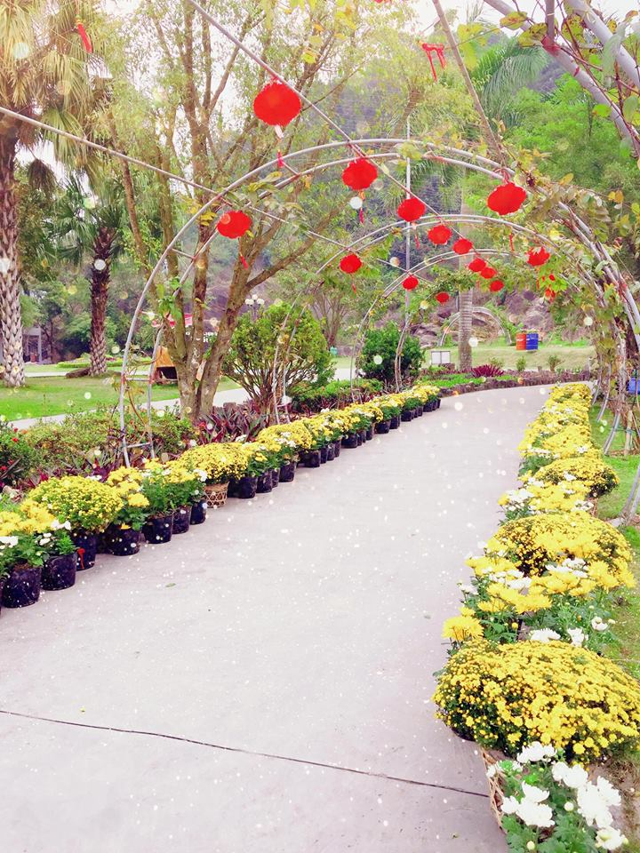

Khu du lịch sinh thái Núi Ngăm
Khu du lịch sinh thái Núi Ngăm Nam Định là một nơi du lịch nổi tiếng với cảnh sắc thiên nhiên hoang sơ cùng không khí trong lành, đem lại sự thoải mái, dễ chịu cho mọi người tới đây. Tạm gác lại những bộn bề của cuộc sống, những ồn ào nơi đô thị đông đúc để đến với núi Ngăm hòa mình vào thiên nhiên. Hãy cùng tìm hiểu kinh nghiệm đi du lịch núi Ngăm qua bài viết dưới đây nhé.
Núi Ngăm cách trung tâm thành phố Nam Định bao xa?
Núi Ngăm nằm tại thôn Kim Thái, xã Minh Tân, Huyện Vụ Bản, tỉnh Nam Định là một điểm du lịch nổi tiếng cho khách thăm quan, nghỉ dưỡng với thiên nhiên, núi rừng, không khí trong lành, khí hậu mát lạnh. Núi Ngăm cách trung tâm thành phố Nam Định chỉ 12 km và cách Hà Nội khoảng 90 km. Đường xá, giao thông ở đây vô cùng thuận tiện cho việc đi lại. Khu du lịch sinh thái Núi Ngăm Nam Định nằm ở nơi núi sông hòa hợp, bao quanh là đồi núi và dòng sông Sắt. Tại đây du khách được hòa mình với thiên nhiên, tận hưởng không khí trong lành, thoải mái, tránh xa mệt mỏi nơi đô thị.
Vé vào cửa của Núi Ngăm là bao nhiêu?
Núi Ngăm là địa điểm du lịch nổi tiếng thu hút nhiều khách du lịch đến thưởng thức cảnh đẹp thiên nhiên, tận hưởng không khí thoảng mát vui giải trí, chơi các trò chơi. Nơi đây có sông, có núi, có rừng có hồ câu cá,… mà vé vào vô cùng phải chăng ở mức người lớn 30.000 đồng/ người, trẻ em 10.000 đồng/ người. Đây là địa điểm thích hợp để mọi người tổ chức các hoạt động cắm trại, dã ngoại.
Núi ngăm Nam Định có những cảnh đẹp gì?
Núi Ngăm là một điểm du lịch lý tưởng để cho mọi người nghỉ ngơi, thăm quan và tổ chức các hoạt động vui chơi hay các sự kiện, các hoạt động trải nghiệm. Với cảnh quan tuyệt đẹp, núi sông chan hòa, cảnh sắc hữu tình. Phục vụ khách thăm quan nhiều loại dịch vụ như là nghỉ dưỡng, tổ chức thăm quan trải nghiệm. Bao gồm các bể bơi, khu vui chơi giải trí, tận hưởng ẩm thực nhà sàn cũng như cà phê sinh thái,… Mang lại cho mọi người cảm giác thoải mái, thư thái nhất xua tan mệt mỏi cuộc sống.
Khu du lịch sinh thái Núi Ngăm có tận 4 khu nhà nghỉ với các phòng nghỉ tiện nghi sang trọng, đầy đủ tiện ích. Và hệ thống nhà sàn có thể phục vụ số lượng khách thăm quan lên đên 500 người. Ngoài thưởng thức vẻ đẹp thiên nhiên nơi đây, du khách có thể trải nghiệm các dịch vụ sinh thái như câu cá, chèo thuyền, bể bơi ngoài trời,…
Không chỉ vậy, Núi Ngăm Nam Định còn được coi là một địa điểm du lịch tâm linh, điểm đến của các du khách. Bởi ở trên núi Ngăm có thờ thần thiêng là Tản Viên, Cao Son và Quý Minh. Ở dưới chân núi còn có đền thờ Xuân Hoa công chúa – Là con gái của vua Lê Thế Tông. Ở đây còn có đền Quan Lớn và Miếu Sơn Thần. Núi Ngăm với sự kết hợp tuyệt vời giữa cảnh sắc thiên nhiên, non nước cùng sự thiêng liêng, nơi đây đã trở thành điểm đến thường xuyên của khách du lịch.